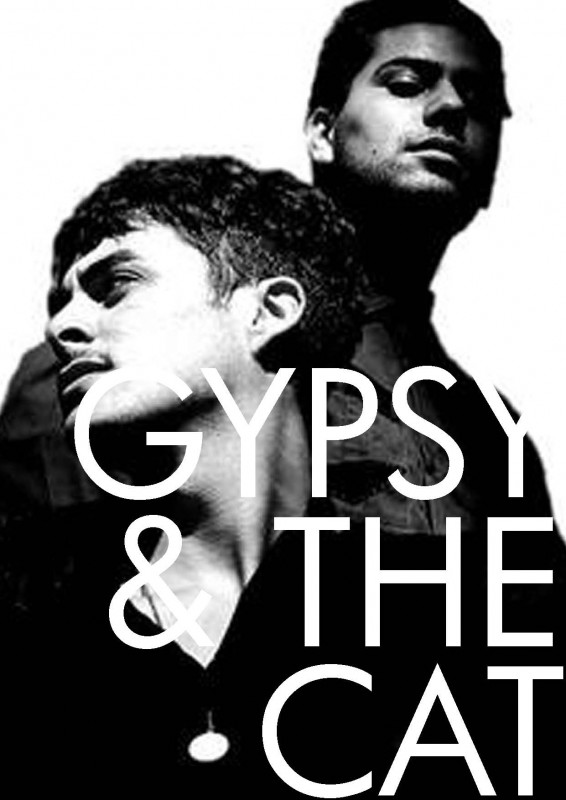

Bienvenidos a
Síguenos en nuestras redes sociales :



Joan Armatrading nació en 1950 en Basseterre, en la isla caribeña de Saint Kitts, el tercero de seis hijos. Su padre era carpintero y su madre era ama de casa. Cuando tenía tres años, sus padres se mudaron con sus dos hijos mayores a Birmingham, Inglaterra, mientras que Joan fue enviada a vivir con su abuela en la isla caribeña de Antigua. A principios de 1958, a la edad de siete años, se unió a sus padres en Brookfields, entonces un distrito de Birmingham. El área ahora está en su mayoría demolida y ha sido absorbida en el distrito de Hockley. Su padre había tocado en una banda en su juventud, y luego le prohibió a sus hijos tocar la guitarra. Aproximadamente a la edad de 14 años, Armatrading comenzó a escribir canciones al poner música a sus propios limericks en un piano que su madre había comprado como "un mueble". Poco después, su madre le compró una guitarra de £ 3 (equivalente a £ 53 en 2016) en una casa de empeños a cambio de dos cochecitos, y la Armatrading más joven comenzó a enseñarse a sí misma el instrumento. Armatrading abandonó la escuela a la edad de 15 años para mantener a su familia, y ella perdió su primer trabajo como mecanógrafa y operador de comptómetro después de llevar su guitarra al trabajo y tocarla durante las pausas para el té.The Late Blue se lanzó en Australia el 19 de octubre de 2012 y el 15 de noviembre de 2012 en iTunes en todo el mundo. Towers y Bacash trabajaron en este disco en un estudio de granja. El 20 de septiembre, Gypsy & The Cat lanzaron las fechas de su gira por Australia, que comenzó después del lanzamiento del álbum. En una entrevista con el periodista musical Nick Milligan para el Maitland Mercury, Towers dijo: "Es [el nuevo disco] probablemente un poco más 'veraniego'. Hay un poco de influencia de la música mundial en él. Es definitivamente diferente al primero álbum de muchas maneras - hay muchos más acordes importantes. Con Gilgamesh hubo más acordes menores. Solo estamos haciendo lo que queremos hacer, como siempre lo hemos hecho. En el próximo álbum podríamos hacer algo incluso diferente, pero creo que [en este álbum] necesitamos hacer algo un poco más 'a la izquierda' que el primer álbum". El álbum se lanzó de forma independiente, en lugar de con una etiqueta principal.
El tercer álbum de Gypsy & The Cat se lanzó el 5 de agosto de 2016. Según un artículo escrito en la publicación en línea The Music, la banda se ha visto influenciada por sus viajes a Japón para el álbum. "Según Bacash, la agitación cultural y ambiental (en Japón) fue justo lo que el médico ordenó para el espacio de cabeza de la banda al hacer este disco". El álbum cuenta con la asistencia de mezcla de Dave Fridmann y Tony Espie (Avalanches, Cut Copy) y el master de Mike Marsh (Chemical Brothers, Basement Jaxx) y John Davis (Led Zeppelin Re-masters, Foals).
Después del lanzamiento de Virtual Islands, el dúo decidió dividir el final de la banda con una nota alta. Hicieron un anuncio en Facebook el 14 de julio de 2016 de que se iban a dividir después de la gira final.
"Creemos que es aún más claro para nosotros que debemos avanzar, en lo más alto y centrados en otros proyectos en los que hemos estado trabajando".
Lionel se mudará al mundo del cine y tengo un proyecto en solitario bajo un alias con música próximamente.